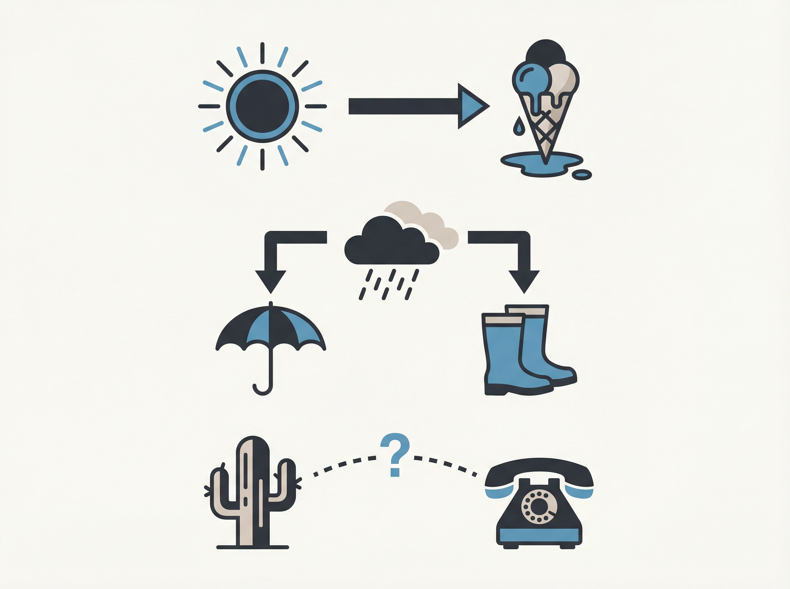

From Ch1
What is scarcity? What does it force?
From Ch1
Opportunity cost = ___ + ___
Your exit ticket
Name the non-monetary cost you identified last class
Ch1 gave you the big ideas. Today: the tools economists use to test them.
ECON 1116 • Principles of Microeconomics • Chapter 2
Dr. Richeng Piao
Department of Economics
Northeastern University
2.1
Explain why economists use simplified models and what role assumptions play
2.2
Distinguish positive statements from normative statements
2.3
Read and interpret basic economic graphs
2.4
Explain the difference between correlation and causation
2.5
Describe how economists use experiments to test theories
From Ch1
What is scarcity? What does it force?
From Ch1
Opportunity cost = ___ + ___
Your exit ticket
Name the non-monetary cost you identified last class
Ch1 gave you the big ideas. Today: the tools economists use to test them.
In 2014, Seattle raised the minimum wage to $15/hour — far above the federal $7.25. Two research teams studied the SAME city, SAME policy, SAME time period.
Team 1: Jardim et al. (UW)
Low-wage workers lost $125/month. Employers cut hours so sharply the wage hike backfired.
Team 2: Dube (UMass)
Negligible job losses. 2024 meta-analysis: 10% wage increase → only 1.3% employment drop.
Same city. Same policy. Opposite conclusions.
How is that possible? Hold that question — we'll answer it in 45 minutes.
Section 1
LO 2.1: Why economists simplify — and when simplification breaks
Key Concept
Economic Model
A simplified representation of reality that isolates key variables and relationships
Key Concept
Assumption
A simplifying condition. Test: "Does it predict well?" not "Is it realistic?"

When models fail: Bank of England's inflation models collapsed in 2021-22. Bernanke found the problem: outdated assumptions about supply chains, not bad data.
Product markets (top): Firms sell goods & services to households
Factor markets (bottom): Households sell labor, land, capital to firms
Money flows in a loop: households spend → firms earn revenue → firms pay wages → households spend again.
A weather model predicts rain 70% of the time.
It assumes flat terrain and no buildings. Which is true?
A
The model is wrong because buildings exist
B
The model is useful despite unrealistic assumptions
C
We need a model that includes every building
D
We can't trust any model with false assumptions
Section 2
LO 2.2: Facts you can test vs. values you can't
Key Concept
Positive Statement
How the world IS. Can be tested with data.
"A higher min wage reduces teen employment."
Key Concept
Normative Statement
How the world SHOULD BE. Reflects values.
"The government should raise the min wage."
This distinction explains why smart, well-informed people look at the same evidence and recommend completely different policies. 93% of economists agree rent ceilings reduce housing quality (positive). They disagree on whether rent control is net good (normative).
Positive (testable)
Bloom's RCT at Trip.com (1,612 employees, published in Nature)
Zero negative impact on productivity
-33% quit rate (worth ~8% salary increase)
Normative (values)
"Companies should require return to office"
85% of managers distrusted remote work — even after seeing the data
Pre-experiment: managers predicted -2.6% productivity. After: revised to +1.0%. Data changed the positive claim — but not the normative question.
Bloom's Level 2-3: Understand & Apply
With a partner: classify each as Positive (P) or Normative (N)
1. "Raising min wage to $20 would reduce teen employment by 5%."
2. "The government should raise the minimum wage to $20."
3. "Remote work reduces commuting costs by $4,000/year."
4. "Companies should allow employees to work from home."
5. "Rent control reduces the quantity of available housing."
6. "Society would be better off without rent control." ⭐ tricky
3 min pairs → 3 min whole-class
Section 3
LO 2.4: The most important statistical principle in this course
Correlation
Two variables move together. Could be positive, negative, or zero.
Causation
One variable directly produces a change in another. Must rule out alternatives.
Three reasons X and Y correlate:
X → Y
Education causes higher income
Y → X
Reverse: rich people afford more education
Z → X, Y
Omitted variable: family background drives both
r = 0.99: Margarine consumption ↔ Maine divorce rate
r = 1.00: Name "Stevie" popularity ↔ Netflix stock price
r = 0.98: Number of websites ↔ wind power capacity
Source: tylervigen.com — Both variables follow similar time trends (population growth, technology adoption), not causal links.

Ice cream sales and drowning deaths are highly correlated. Why?
A
Ice cream causes drowning
B
Drowning causes ice cream sales
C
Hot weather causes both ✓
D
Pure coincidence
Section 4
LO 2.5: From theory to evidence — the credibility revolution
Gold Standard
Randomized Controlled Trial
Randomly assign people to treatment or control. Any difference = causal effect.
Example: Bloom's remote work study at Trip.com
Next Best
Natural Experiment
An external event creates near-random treatment/control groups without anyone designing it.
Example: Card & Krueger's NJ vs PA minimum wage
The credibility revolution: Angrist, Imbens, Card won the 2021 Nobel for developing these methods. Economics transformed from theory-only to evidence-based.
Key Concept
Difference-in-Differences
Compare the change in treatment to the change in control
Jardim: Control = synthetic Seattle from outlying WA regions
Dube: Control = cross-state commuting zones (better match for tech boom)
Same data. Different control groups. Opposite conclusions. The choice of comparison determined the finding.
Which provides the STRONGEST evidence of causation?
A
Before-and-after comparison
B
Correlation analysis
C
Natural experiment + DiD
D
Randomized controlled trial ✓
Groups of 3-4. Your verdict: CAUSAL | CORRELATION | NEEDS MORE EVIDENCE
1. "States that expanded Medicaid see lower uninsured rates"
2. "People who eat breakfast earn higher salaries"
3. "New CEO takes over — stock price rises 40%"
4. "Randomized study: free tutoring raises GPA by 0.3"
5. "Countries with more internet access are wealthier"
6. "After rent control, building permits dropped 79%"
4 min group work → 3 min debrief
Post Hoc Fallacy
"After this, therefore because of this"
"Markets rally as President speaks" — timing ≠ causation
Composition Fallacy
True for one ≠ true for all
Paradox of thrift: If everyone saves more, spending collapses
Simpson's Paradox
Subgroup trends reverse when combined
Hong Kong: participation rising in every age group, falling overall (aging)
These traps catch even experienced analysts. The cure: better data, better questions, and the tools you learned today.
🗺️
Models
Maps, not mirrors. Judge by predictions.
⚖️
Positive vs Normative
IS vs SHOULD. Most debates are normative.
🔗
Correlation ≠ Causation
Always ask: what's the omitted variable?
🔬
Credibility Revolution
RCTs + natural experiments + DiD
⚠️
Watch for Pitfalls
Post hoc, composition, Simpson's
"AI can find correlations in seconds. It takes an economist to know whether they mean anything."
Write one positive statement and one normative statement about your major or intended career.
Tests LO 2.2 — can you generate (not just classify) both types?
Next class: Chapter 3 — the Production Possibilities Frontier. Our first real model.
Coming Next
Comparative advantage, the PPF, and why specialization makes everyone better off
📎 Pre-lecture: Listen to the Ch3 Deep Dive podcast on Canvas